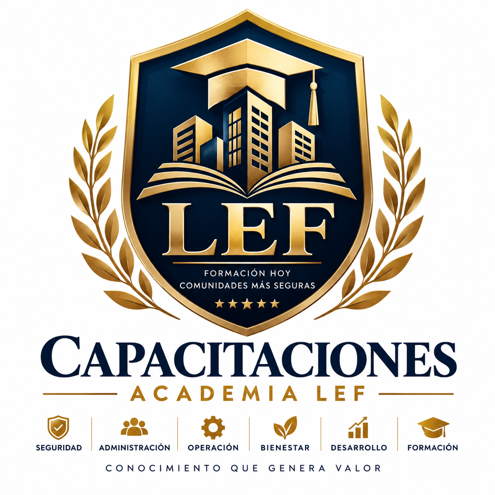

Comités
Gobernanza, responsabilidades, control y toma de decisiones.
Formación práctica para comités, administradores, personal y comunidades, conectando experiencia de terreno, normativa y herramientas aplicables.

Gobernanza, responsabilidades, control y toma de decisiones.
Procesos, operación, documentación y cumplimiento.
Servicio, prevención, control de acceso y respuesta.
Convivencia, prevención y preparación ante emergencias.
Contenidos ajustados a cada necesidad.
Medición del aprendizaje y constancia o certificado según corresponda.
Identificar necesidades de aprendizaje.
Definir objetivos y contenidos.
Desarrollar aprendizaje práctico.
Comprobar comprensión y aplicación.
Emitir respaldo según alcance real.
Formación orientada a fortalecer las capacidades del Comité de Administración para ejercer sus funciones con mayor claridad, organización, control y respaldo en la toma de decisiones.
Desarrollamos instancias de capacitación enfocadas en gobernanza, responsabilidades, organización, supervisión y seguimiento de materias relevantes para la administración de la comunidad.
Buscamos entregar conocimientos y herramientas que faciliten el análisis de información, el control de la gestión y una toma de decisiones informada y documentada.
Organización del Comité, funcionamiento interno y relación con la administración de la comunidad.
Comprensión de las principales responsabilidades asociadas al ejercicio de las funciones del Comité.
Criterios para analizar antecedentes, establecer prioridades y respaldar adecuadamente las decisiones adoptadas.
Herramientas para realizar seguimiento de acuerdos, compromisos, pendientes e información relevante de la comunidad.
Importancia de mantener registros y antecedentes organizados que permitan respaldar la gestión y sus decisiones.
Buenas prácticas para mantener una relación de trabajo organizada, colaborativa y orientada al seguimiento de la gestión.
La capacitación combina contenidos conceptuales con situaciones prácticas para facilitar su aplicación en la gestión cotidiana del Comité.
Identificamos las necesidades de capacitación y las características de la comunidad.
Explicamos conceptos, funciones y criterios fundamentales relacionados con la gestión del Comité.
Revisamos situaciones y casos que permitan relacionar los contenidos con la realidad de la comunidad.
Trabajamos herramientas y buenas prácticas utilizables en el ejercicio de las funciones del Comité.
Verificamos la comprensión de los contenidos abordados durante la capacitación.
Orientamos los aprendizajes hacia una gestión más organizada, informada y trazable.
Una instancia formativa orientada a entregar conocimientos y herramientas aplicables a la gestión y supervisión de la comunidad.
Contenidos orientados a situaciones habituales que enfrenta un Comité de Administración.
Criterios y buenas prácticas para organizar, supervisar y dar seguimiento a materias relevantes.
Antecedentes o recursos complementarios definidos de acuerdo con el programa impartido.
Aplicación de los contenidos mediante ejemplos, situaciones y necesidades propias de la comunidad.
Verificación del aprendizaje cuando corresponda según las características de la actividad formativa.
Documento de participación o aprobación cuando corresponda al programa desarrollado.
Diseñamos la capacitación considerando las características, necesidades y nivel de conocimiento de cada Comité.
Formación orientada a fortalecer las competencias necesarias para organizar, ejecutar, controlar y documentar la administración de comunidades y edificios.
Desarrollamos capacitaciones enfocadas en procesos administrativos, operación, documentación, control, coordinación y cumplimiento, vinculando los contenidos con situaciones propias de la gestión de comunidades.
Buscamos fortalecer conocimientos y criterios que permitan desarrollar una administración organizada, trazable y orientada al seguimiento de las distintas áreas de gestión.
Organización de procesos, requerimientos, comunicaciones, acuerdos, pendientes y antecedentes relevantes de la comunidad.
Conceptos y controles asociados a presupuestos, ingresos, egresos, obligaciones, conciliaciones y reportabilidad.
Coordinación de instalaciones, mantenedores, proveedores, personal y necesidades operacionales de la comunidad.
Organización, conservación y seguimiento de documentos y registros necesarios para respaldar la gestión.
Identificación y seguimiento de obligaciones, requerimientos y materias que requieran revisión o regularización.
Presentación organizada de avances, resultados, pendientes e información relevante para el Comité y la comunidad.
La capacitación combina conocimientos, herramientas y situaciones prácticas para fortalecer su aplicación en la administración cotidiana de comunidades.
Identificamos necesidades formativas, experiencia previa y características de la gestión desarrollada.
Abordamos conceptos, responsabilidades, procesos y criterios fundamentales para la administración.
Trabajamos métodos para estructurar información, documentación, tareas, controles y prioridades.
Relacionamos los contenidos con situaciones y requerimientos habituales de una comunidad.
Incorporamos criterios de seguimiento, respaldo, trazabilidad y revisión de la gestión.
Verificamos la comprensión y aplicación de los contenidos desarrollados durante la capacitación.
Una formación orientada a fortalecer conocimientos y herramientas aplicables a la organización, ejecución y control de la administración de comunidades.
Contenidos relacionados con las principales áreas y procesos involucrados en la administración.
Criterios para estructurar tareas, información, documentación, controles y seguimiento.
Análisis de situaciones que permiten relacionar los contenidos con la realidad operacional de una comunidad.
Recursos complementarios definidos de acuerdo con los contenidos y características del programa impartido.
Medición del aprendizaje cuando corresponda según los objetivos y características de la capacitación.
Documento de participación o aprobación cuando corresponda al programa desarrollado.
Adaptamos los contenidos a las necesidades, experiencia y realidad operacional de los administradores y comunidades participantes.
Formación orientada a fortalecer las competencias del personal que participa directamente en la operación, atención, prevención, control de acceso y respuesta cotidiana de edificios y comunidades.
Desarrollamos capacitaciones enfocadas en servicio, comunicación, prevención, control de acceso, cumplimiento de procedimientos y actuación frente a situaciones habituales o contingencias.
Buscamos entregar conocimientos y herramientas que permitan desarrollar las funciones asignadas de manera organizada, preventiva y coherente con los procedimientos definidos por cada comunidad.
Buenas prácticas de atención, comunicación y orientación en la relación cotidiana con residentes, visitas, proveedores y terceros.
Aplicación de procedimientos para el ingreso y salida de personas, visitas, proveedores, encomiendas y otras situaciones definidas por la comunidad.
Identificación de situaciones de riesgo y aplicación de medidas preventivas dentro del ámbito de las funciones asignadas.
Importancia de registrar hechos, instrucciones, incidentes y antecedentes relevantes para mantener continuidad y trazabilidad operacional.
Comprensión y aplicación de instrucciones operativas establecidas para situaciones habituales y contingencias.
Criterios básicos de actuación, comunicación, escalamiento y registro frente a situaciones que requieran respuesta o coordinación.
La capacitación combina contenidos prácticos, procedimientos y análisis de situaciones para facilitar su aplicación durante la operación cotidiana.
Identificamos funciones, necesidades formativas y situaciones habituales del personal participante.
Explicamos funciones, criterios preventivos, procedimientos y responsabilidades asociadas al trabajo cotidiano.
Trabajamos la identificación de situaciones, riesgos, desviaciones y antecedentes que requieren atención.
Aplicamos procedimientos y criterios de respuesta mediante situaciones prácticas relacionadas con la operación.
Fortalecemos la correcta documentación y comunicación de novedades, incidentes y acciones realizadas.
Verificamos la comprensión y aplicación de los contenidos abordados durante la capacitación.
Una formación orientada a fortalecer el desempeño, la prevención y la aplicación organizada de procedimientos durante la operación cotidiana de la comunidad.
Contenidos relacionados con funciones y situaciones habituales del trabajo en edificios y comunidades.
Herramientas para reconocer situaciones que requieran prevención, atención, comunicación o escalamiento.
Fortalecimiento de criterios para ejecutar instrucciones y protocolos definidos por la comunidad.
Recursos complementarios definidos de acuerdo con los contenidos y características del programa impartido.
Medición del aprendizaje cuando corresponda según los objetivos y características de la capacitación.
Documento de participación o aprobación cuando corresponda al programa desarrollado.
Adaptamos cada capacitación a las funciones, procedimientos, riesgos y características operacionales del edificio o comunidad.
Formación dirigida a copropietarios y residentes para fortalecer la convivencia, la prevención, el conocimiento de responsabilidades comunes y la preparación frente a situaciones que puedan afectar a la comunidad.
Desarrollamos actividades formativas orientadas a entregar información clara y práctica sobre convivencia, prevención, uso responsable de espacios comunes y preparación frente a emergencias.
Buscamos fortalecer una cultura comunitaria basada en la información, la corresponsabilidad, la prevención y la participación responsable de quienes integran la comunidad.
Buenas prácticas para favorecer relaciones respetuosas, comunicación adecuada y uso responsable de los espacios compartidos.
Orientación general sobre responsabilidades y participación de copropietarios y residentes dentro de la comunidad.
Identificación de conductas y situaciones que pueden generar riesgos para personas, instalaciones o bienes comunes.
Información práctica sobre organización, comunicación y actuación frente a situaciones de emergencia.
Buenas prácticas orientadas al cuidado, utilización responsable y conservación de instalaciones y bienes comunitarios.
Importancia de los canales formales, la información oportuna y la participación responsable en materias de interés comunitario.
Las actividades se desarrollan mediante contenidos claros, ejemplos cotidianos y situaciones prácticas que faciliten la comprensión y aplicación de los aprendizajes.
Reconocemos las necesidades, características y principales materias de interés de la comunidad.
Entregamos contenidos comprensibles y relacionados con situaciones propias de la vida comunitaria.
Explicamos la importancia y consecuencias prácticas de los temas abordados durante la actividad.
Promovemos conductas y criterios que contribuyan a reducir riesgos y situaciones evitables.
Favorecemos una participación informada y responsable en las materias que afectan a la comunidad.
Relacionamos los contenidos con acciones concretas que puedan incorporarse a la vida cotidiana.
Una actividad formativa diseñada para facilitar la comprensión de materias relevantes y promover conductas responsables, preventivas y colaborativas.
Contenidos presentados de manera clara y orientados a situaciones propias de la comunidad.
Recomendaciones y criterios que contribuyan a reconocer y prevenir situaciones de riesgo.
Orientaciones aplicables a convivencia, comunicación, participación y cuidado de espacios comunes.
Recursos complementarios definidos según los contenidos y características de la actividad realizada.
Espacio formativo que favorece la comprensión, consulta y participación de los asistentes.
Registro o constancia de participación cuando las características del programa así lo contemplen.
Adaptamos cada actividad a las características, necesidades y realidad de la comunidad participante.
Diseño de capacitaciones adaptadas a las necesidades, características, funciones y objetivos específicos de cada comunidad, organización o equipo de trabajo.
Identificamos los requerimientos del solicitante y estructuramos contenidos, metodología, duración y actividades considerando el público objetivo y los resultados esperados.
Buscamos que cada programa responda a necesidades concretas y entregue conocimientos y herramientas que puedan ser aplicados en el contexto donde se desempeñan los participantes.
Identificación de requerimientos, problemáticas, objetivos y características del grupo que participará en la capacitación.
Establecimiento de los conocimientos, capacidades o criterios que se busca fortalecer mediante el programa.
Selección y organización de materias de acuerdo con las necesidades detectadas y el perfil de los participantes.
Definición de actividades, ejemplos, ejercicios y recursos formativos apropiados para los objetivos establecidos.
Preparación de recursos complementarios relacionados con los contenidos y características del programa.
Incorporación de mecanismos de evaluación o retroalimentación cuando corresponda a los objetivos de la capacitación.
Cada capacitación se estructura mediante un proceso que permite transformar una necesidad identificada en una propuesta formativa coherente y aplicable.
Identificamos necesidades, participantes, contexto y resultados esperados.
Establecemos objetivos, alcance, contenidos prioritarios y características generales del programa.
Estructuramos contenidos, metodología, actividades y recursos necesarios para desarrollar la capacitación.
Desarrollamos la actividad formativa de acuerdo con el programa y metodología definidos.
Revisamos la comprensión, participación o aprendizaje según las características del programa.
Recogemos antecedentes que permitan valorar la actividad y fortalecer futuras instancias formativas.
Una propuesta formativa estructurada de acuerdo con las necesidades identificadas, el público participante y los objetivos definidos para la capacitación.
Estructura de contenidos y objetivos asociados a las necesidades levantadas.
Materias seleccionadas y desarrolladas considerando las características del grupo participante.
Actividades y recursos adaptados al contexto y objetivos de aprendizaje establecidos.
Recursos complementarios definidos según el alcance y características del programa desarrollado.
Mecanismos para verificar aprendizaje, comprensión o participación de acuerdo con los objetivos del programa.
Documento de participación o aprobación cuando corresponda a las características de la capacitación.
Diseñamos programas considerando el contexto, público objetivo, necesidades detectadas y resultados que se busca alcanzar.
Procesos orientados a verificar la comprensión y el aprendizaje alcanzado durante las actividades de capacitación, generando evidencia de participación y resultados cuando corresponda.
Incorporamos mecanismos de evaluación acordes con los objetivos, contenidos y características de cada actividad formativa, permitiendo verificar el nivel de comprensión o aprendizaje alcanzado.
Buscamos que la capacitación no se limite a la entrega de contenidos, sino que permita conocer el nivel de aprendizaje y disponer de antecedentes que respalden el proceso formativo.
Identificación del nivel inicial de conocimientos cuando resulte pertinente para los objetivos del programa.
Verificación de conocimientos y comprensión mediante instrumentos adecuados a los contenidos impartidos.
Utilización de ejercicios, situaciones o casos para observar la aplicación de los contenidos desarrollados.
Control de asistencia o participación cuando forme parte de las condiciones definidas para la actividad.
Entrega de observaciones que permitan reforzar conocimientos, aclarar contenidos y favorecer el aprendizaje.
Organización de los antecedentes obtenidos durante la evaluación para respaldar el proceso formativo realizado.
El proceso de evaluación se adapta al tipo de capacitación y permite revisar de manera ordenada la participación, comprensión y resultados alcanzados.
Establecemos qué conocimientos, habilidades o criterios serán objeto de evaluación.
Definimos el mecanismo de evaluación más apropiado para los objetivos y características de la capacitación.
Implementamos la evaluación en el momento definido dentro del proceso formativo.
Analizamos las respuestas, actividades o evidencias generadas por los participantes.
Comunicamos observaciones y reforzamos aquellos contenidos que requieran mayor comprensión.
Organizamos los resultados y antecedentes necesarios para respaldar la actividad realizada.
Antecedentes que permiten conocer y respaldar la participación, comprensión o aprendizaje alcanzado, de acuerdo con las características del programa desarrollado.
Antecedentes obtenidos mediante el mecanismo de evaluación definido para la actividad.
Evidencia de asistencia o participación cuando corresponda a las características del programa.
Información orientada a reforzar conocimientos y favorecer la comprensión de los contenidos.
Registros que permiten respaldar el desarrollo y resultados de la actividad de capacitación.
Documento de participación cuando corresponda según las condiciones definidas para la actividad.
Documento asociado al cumplimiento de las condiciones de participación o aprobación establecidas para el programa.
Definimos mecanismos de evaluación acordes con los objetivos, contenidos y características de cada actividad formativa.